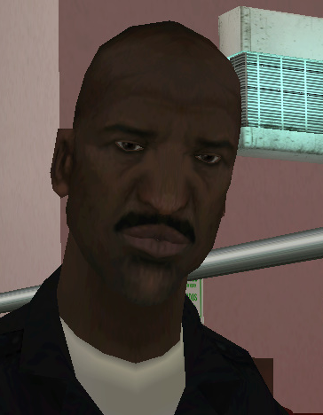
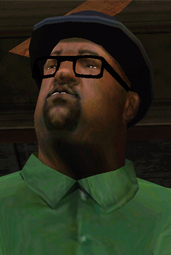
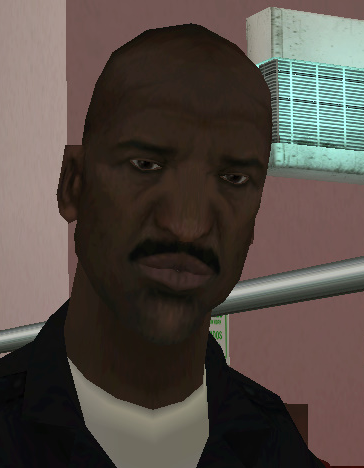
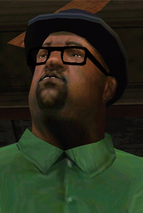
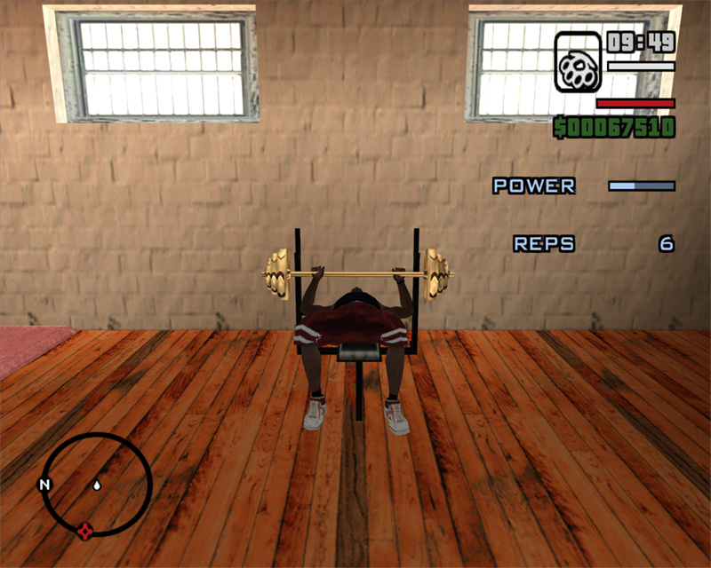
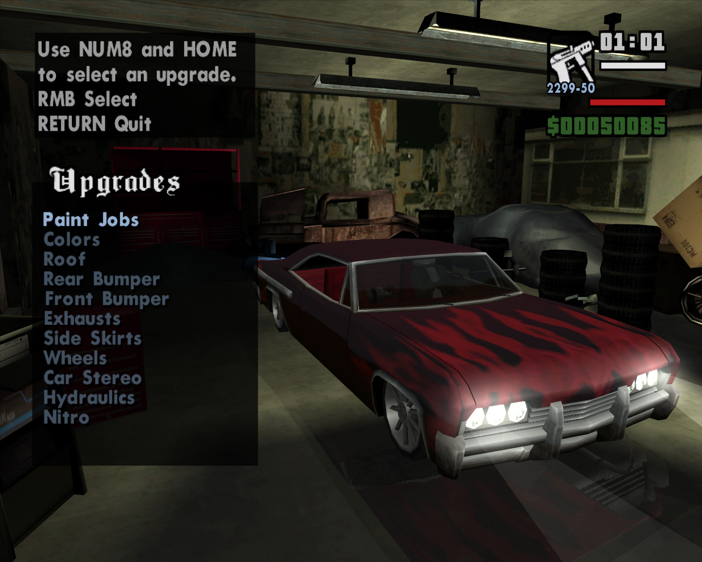
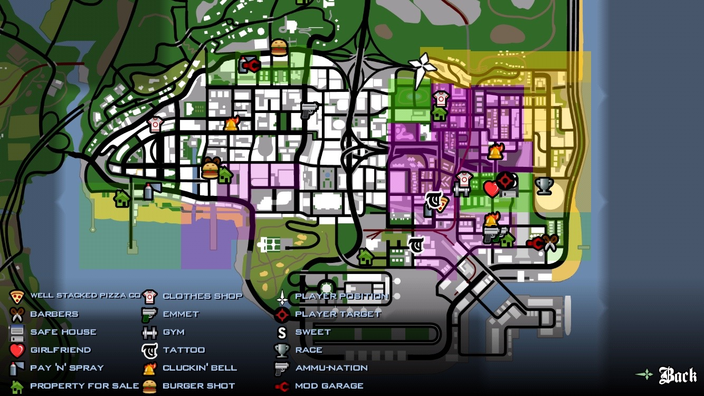
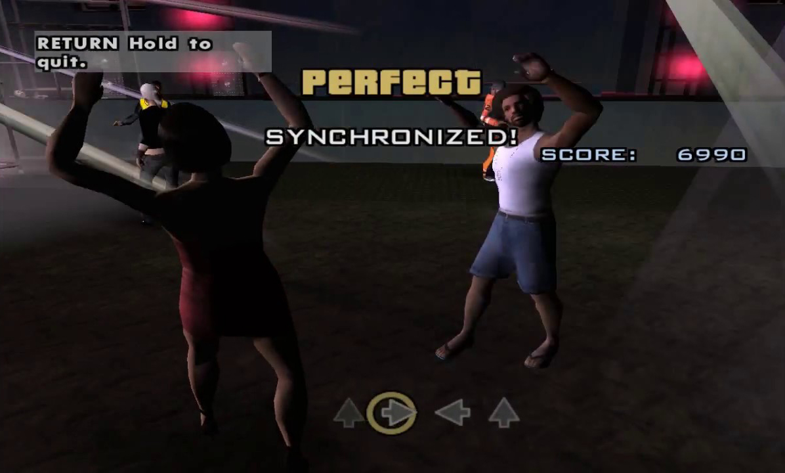
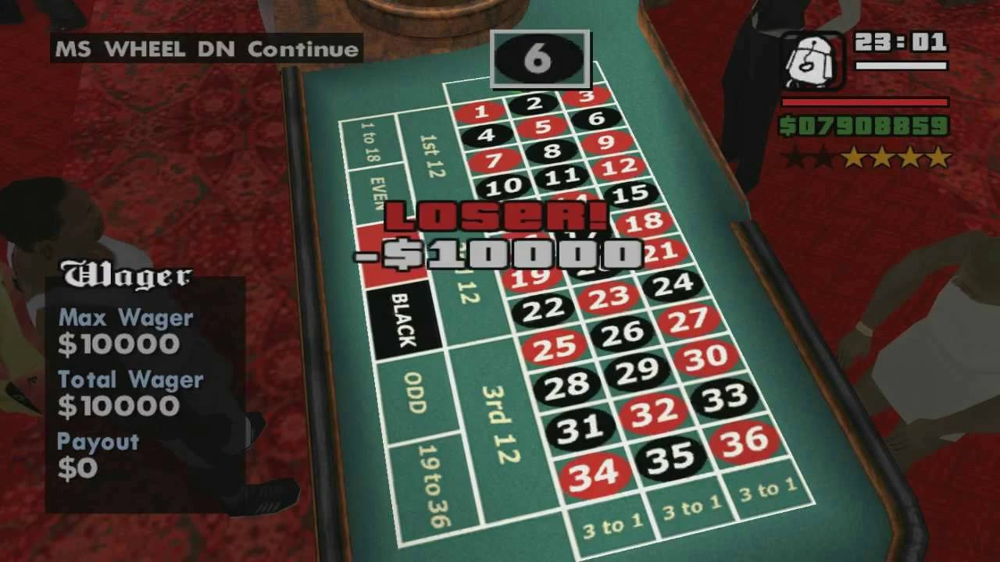
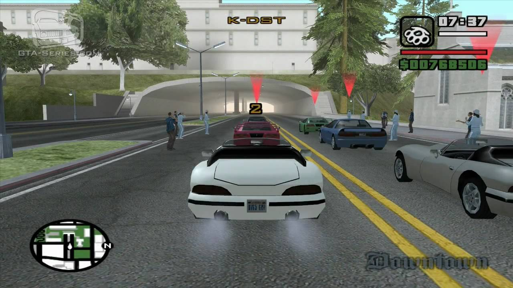

The story of Grand Theft Auto San Andreas is set in a fictional recreation of California with three main cities with mountains and land in between. The three cities are Los Santos which is a recreation of Los Angeles, San Fierro which is a recreaction of San Diego and Las Venturas which is a recreation of Las Vegas. The story begins with the protagonist Carl Johnson returning to Los Santos after 5 years. Carl is returning to mourn the loss of his mother. Right after getting off at the airport his taxi is stopped by Officer Tenpenny and Officer Hernandez. They accuse Carl of murdering a fellow officer. They take all of Carl's money and leave him in an ally.Carl goes home and meets up with his friend Big Smoke who says that Carls brother and sister are at the graveyard. Carl than meets up with his brother Sweet and his sister Kendal. Sweet tells him that things in Los Santos are very messed up. Carls gang has fallen and rival gangs have taken over. Carl then begins working with Sweet and his friends Ryder and Big Smoke to return The Families to their former glory. Carl slowly starts to rebuild the grove street families by taking over other gang territories. A huge conflict is about to take form as Sweet assembles a grove street army and wants to eliminate the Ballers gang once and for all. Carl then gets a call from his sisters boyfriend Cesar who shows him Big Smoke and Ryder going in the same car that drove by to kill his mom with Tenpenny. Carl realises that Sweet is walking into a trap but by the time he gets there sweet has already been arrested. Carl flees Los Santos to San Fierro. Carl is then set on a crazy journey where he has to kill his former friend and free his brother from the police. After meeting many new people and going on new adventures Carl finds a way to return to Los Santos and kills Ryder as well as Big Smoke. The story concludes when Carl kills Officer Tenpenny infront of his house. The story is full of gang violence but once you play through the game you see the message that Rocktstar games is trying to tell you.
 



The core gameplay consists of elements of third-person shooter and a driving game, affording the player a large, open environment in which to move around. On foot, the player's character is capable of walking, running, swimming, limited climbing, and jumping, as well as using weapons and various forms of hand to hand combat. Players can operate a variety of vehicles, including automobiles, boats, airplanes, helicopters, trains, tanks, motorcycles, and bicycles. Players may also import vehicles rather than steal them. One other feature in GTA San Andreas is the player customization, Carl Johnson is Grand Theft Auto's most customizable protagonist due to the possibility in-game to change his clothes, tattoos, hairstyle, and even his body mass in which he can be fat, skinny, or muscular. But the customization doesn't stop there you can also customize the look of vehicles at mod garages, each garage opens at certain times in the storyline, due to the islands being locked, or, in Los Santos' case, the mission has not been reached. The same applies with properties. Many items can be purchased and upgraded at these garages; Paint Jobs, Vents, Hood, Exhaust, Spoilers, Lights, Nitrous, Roof, Wheels, Stereo, and Hydraulics. Most items will vary depending on the vehicle, A Nitrous system is available in 3 different levels 2, 5 and 10. These are the main three features that draw my attention in San Andreas but there are so many more in the game

| Developer: | - Rockstar North |
|---|---|
| Publisher: | - Rockstar Games - 1C Company - Capcom - Ak Tronic Software |
| Release Date | - Oct 17, 2006 |
| Platforms | - Playstation 2,3,4 - Android - iOS - Xbox - Xbox 360 - Windows - Macintosh |
| Modes | - Single Player |
| Genre | - Third Person Shooter - Action Adventure |
| Rating | ESRB: Mature 17+ |
  
There are many different minigames in GTA San Andres. These mini games range from stealing to hunting to police missions. But my personal favorite are the dancing minigame, the gambling minigame and the racing minigame. In the dancing mini game you take control of your player character and try to match the buttons that appear on the screen. It may seem simple but once you reach a high difficulty the buttons start coming and passing you have to have a very quick reaction time to beat the level. There are many different versions that you unlock as you play the game. The gambling minigame is not a singular minigame but more an entire casino. The casino unlocks once you reach Las Venturas in the game. There are many things you can do there like black jack and slot machines. The most advanced minigame is the poker mini game where you play a fully fleged poker game against AI or split screen co-op. The difficulty ranges from beginner level to highly advanced. Other games in the casino include roulette, and wheel of fortune. There are three casinos in Las Venturas that are accessible each with a different theme and games. Street races are one of the most rewarding and challenging thing you can do in GTA San Andreas. Each race follows a different course. You must pass through a succession of markers, and you must pass through a marker to activate the next marker. In order to successfully complete a race, Carl must finish in first place. Each first-place finish carries a reward of $10,000. Finishing all races in first place gives the player an additional $1,000,000. Each part of the state has different races. Los Santos has 9 different race tournaments, San Fierro has 6 and Las Venturas has 4. The races get higher in difficulty the more you progress with Las Venturas having the hardest races. The minigames in San Andreas are very enjoyable and are each fleshed out.
  